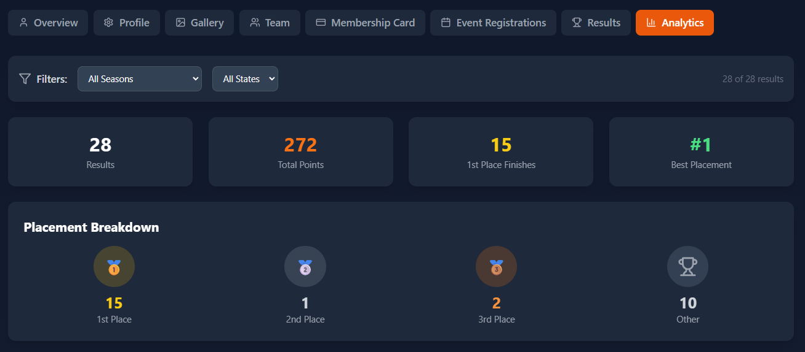
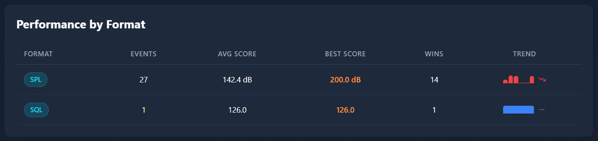
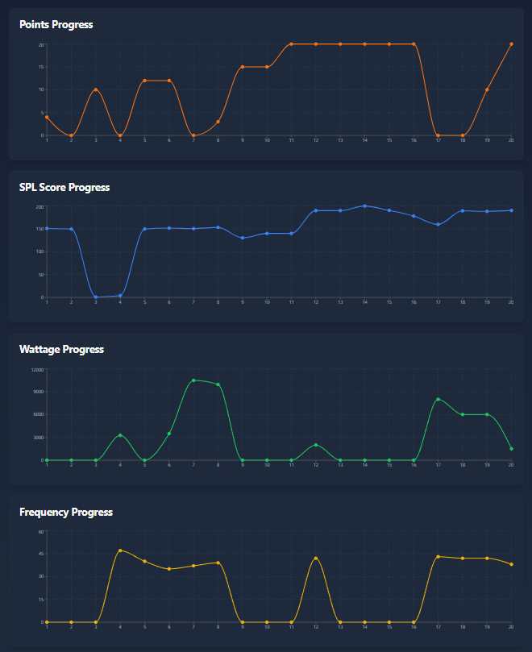

Charts, stats, trends, and tips to improve your competition performance
At the top of the Analytics tab, four summary cards give you a high-level view of your competition history:

Screenshot: analytics-summary-stats.png'">The four summary stat cards at the top of the Analytics tab
Upload as: analytics-summary-stats.png • Title: Analytics Summary Stats • Desc: Four summary stat cards at the top of the Analytics tab — Total Results, Total Points, 1st Place Finishes, Best Placement • Tags: faq, analytics, stats, summary, cards
| Stat | What It Measures |
|---|---|
| Total Results | The total number of competition results recorded for your account |
| Total Points | Cumulative competition points earned across all events and formats |
| 1st Place Finishes | Number of times you placed 1st in any class and format |
| Best Placement | Your best ever placement (hopefully 1st!) |
The placement breakdown shows how often you finish in each position:
| Category | Icon | Meaning |
|---|---|---|
| 1st Place | 🥇 | Number of gold-medal finishes |
| 2nd Place | 🥈 | Number of silver-medal finishes |
| 3rd Place | 🥉 | Number of bronze-medal finishes |
| Other | 🏅 | Number of finishes outside the top 3 |
This gives you a quick sense of how consistently you're finishing on the podium.
This section breaks down your total points by competition format:
This helps you see which formats are contributing most to your overall point total.
The detailed performance table shows format-level statistics:

Screenshot: analytics-performance-table.png'">The performance by format breakdown table
Upload as: analytics-performance-table.png • Title: Performance by Format Table • Desc: Performance breakdown table showing competitions count, average score, total points, and win rate per format (SPL, SQL, etc.) • Tags: faq, analytics, performance, format, table
| Metric | Description |
|---|---|
| Competitions | Number of events competed in for that format |
| Average Score | Your average score across all events in that format |
| Total Points | Total points earned in that format |
| Win Rate | Percentage of events where you placed 1st in that format |

Screenshot: analytics-charts.png'">The analytics charts: placement distribution, score trends, and points by format
Upload as: analytics-charts.png • Title: Analytics Charts • Desc: Three analytics charts — placement distribution pie chart, score trends line chart, and points by format bar chart • Tags: faq, analytics, charts, pie, trends, bar
The pie chart shows the proportion of your finishes at each position. A larger slice for "1st Place" means you're winning more often. This visual makes it easy to spot if you're consistently podium-finishing or if there's room to improve.
The line chart plots your scores over time, showing whether you're improving, holding steady, or declining. Look for:
The bar chart compares your total points across formats side by side. This makes it easy to see your strongest and weakest formats at a glance.
Use the season filter to compare your performance across different years:
Use your analytics data to identify areas for growth: